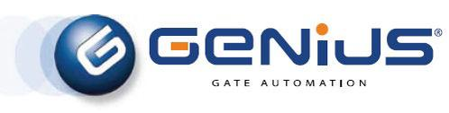
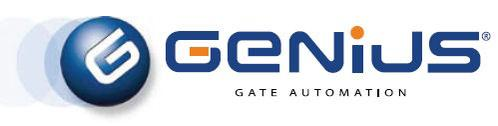

AUTOMATIZIMI PËR DERË DHE RAMPË
DYER LEKUNDËSE

Portat lëvizëse janë një zgjedhje popullore për pronat rezidenciale dhe komerciale, pasi ato janë të lehta për t'u përdorur dhe ofrojnë një nivel të lartë sigurie. Selcon është një kompani e specializuar në instalimin e sistemeve të automatizimit të portës së lëvizshme, të cilat ofrojnë komoditet dhe siguri për pronarët e pronave. Me përdorimin e teknologjisë së avancuar dhe materialeve me cilësi të lartë, Selcon siguron që sistemet e tyre të automatizimit të portës së lëvizshme të jenë të besueshme, të qëndrueshme dhe efikase.
DYER RESHQITËS

Selcon është një firmë e specializuar në instalimin e sistemeve të automatizuara të dyerve rrëshqitëse. Automatizimi i dyerve rrëshqitëse i referohet procesit të motorizimit të hapjes dhe mbylljes së dyerve rrëshqitëse, duke ofruar komoditet të shtuar, aksesueshmëri dhe siguri për një sërë pronash, duke përfshirë ndërtesa tregtare, me pakicë dhe të kujdesit shëndetësor. Sistemet e automatizimit të dyerve rrëshqitëse të Selcon mundësohen nga energjia elektrike dhe mund të përdoren duke përdorur një sërë metodash kontrolli, të tilla si sensorë, butona shtytës ose telekomandë.
RAMPË AUTOMATIKE


Barrierat rrugore janë sisteme të automatizimit të portës që kontrollojnë aksesin e automjeteve në vende të ndryshme. Ato përbëhen nga një krah horizontal i bumit që mund të përdoret manualisht ose automatikisht duke përdorur motorë elektrikë. Selcon specializohet në instalimin dhe mirëmbajtjen e sistemeve të personalizuara të barrierave rrugore që ofrojnë veçori të shtuara sigurie dhe sigurie si sensorë pengimi.
GARAZH

Selcon është një firmë lider në instalimin dhe mirëmbajtjen e sistemeve të automatizimit të dyerve të garazhit. Ato ofrojnë një sërë zgjidhjesh të personalizueshme për t'iu përshtatur nevojave unike të klientëve të tyre, qoftë për pronat rezidenciale apo komerciale.
Sistemet e automatizimit të dyerve të garazhit ofrojnë një mënyrë të përshtatshme dhe të sigurt për të hyrë në një garazh pa pasur nevojë të hapni ose mbyllni manualisht derën. Këto sisteme mund të operohen me telekomandë, tastiera ose sensorë lëvizjeje, duke lejuar akses të lehtë dhe efikas.
 
